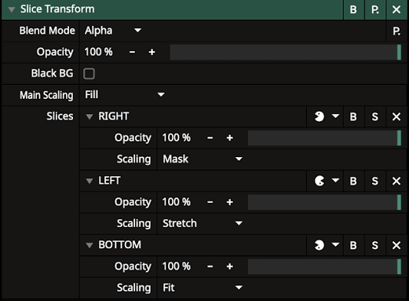
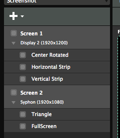
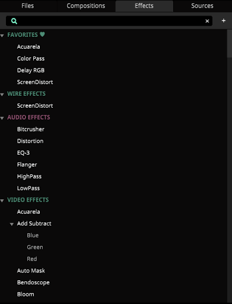
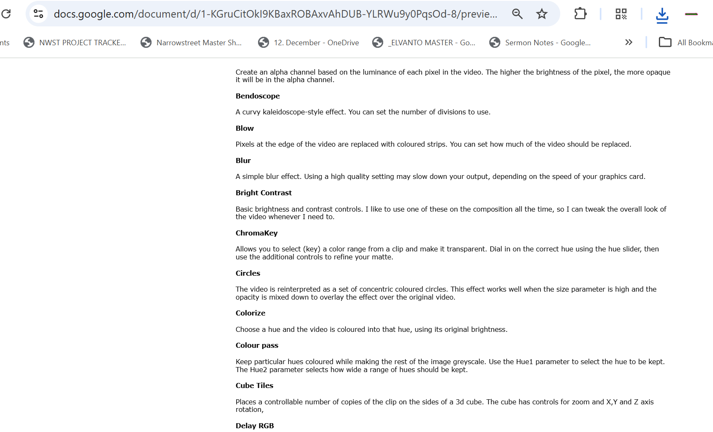
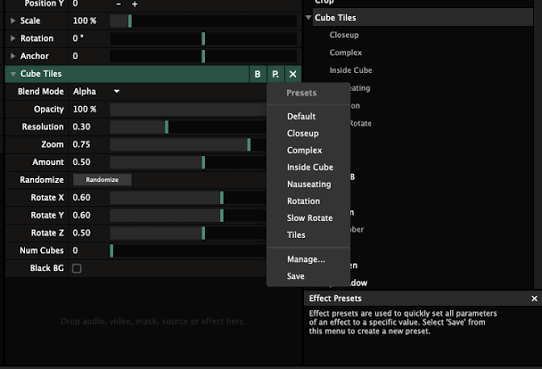
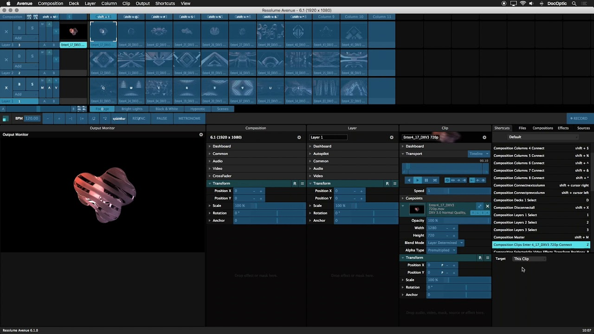
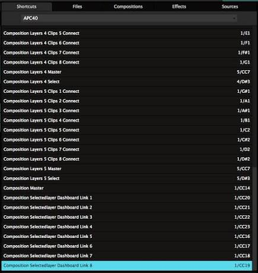
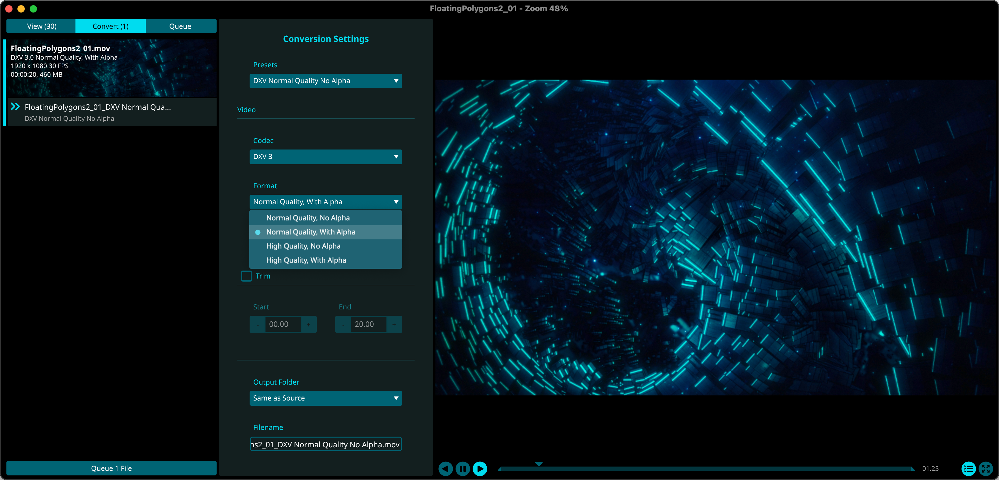

How is Resolume?
The core workflow — inputs, layers, and the everyday adjustments you'll make live. Orange callouts mark places where there's more going on under the hood; flip the Advanced switch above to expand them all, or open them one at a time.
From ProPresenter
In ProPresenter, you're used to it being the source of lyrics and the teleprompter — it drives what the congregation and the stage see as text.
Resolume doesn't replace that. It handles media: slides, the live camera feed, videos, and images. Think of it as the layer that sits around and underneath what ProPresenter already produces.


SDI vs NDI
Both are ways of getting video signal from one place to another. Which one a room uses depends on what that room is set up for.
SDI is a physical connection — a cable. It's stable and predictable, but it requires hardware (cabling, converters, a proper run between rooms). The main sanctuary uses SDI for this reliability.
NDI is virtual — it travels over the network instead of a dedicated cable. That makes it flexible (no new cable run needed, easy to add a source), but it can be unstable if the network isn't set up cleanly for it. Sanctuary 2 uses NDI for this flexibility.
Layering
Resolume composites video the way a graphics program composites images: in layers, stacked on top of each other.
- Layer (row) vs. column — layers can stack on top of one another; columns can't.
- Top to bottom priority — the layer on top wins, just like layers in any image editor.
- Composition vs. Group vs. Layer — a Composition is the whole stack sent to the screen; a Group bundles a few layers together so they can be moved, faded, or triggered as one unit; a Layer is the individual row playing a single clip at a time.
- Opacity — how much of a layer shows through the one(s) below it (more in Customizations).
 Watch: Layer Structure — resolume.com/training
Watch: Layer Structure — resolume.com/training
Slicing
You don't have to use a whole input. Resolume can cut up any portion of it — for example, showing only the left half of a camera feed.
It can also resize: a 720×1080 source can be stretched or fit to 1920×1080, at the cost of some resolution. Resolume's own Input Selection guide covers this in more depth.

Beyond simple resizing, Resolume's Advanced Output screen lets you patch and scale your composition onto specific physical outputs — useful once you're feeding more than one screen or a non-standard resolution.

ProPresenter's live output (its "Live Feed") is, from Resolume's perspective, just another input — one that can be triggered, layered, and customized exactly like a video clip or camera feed.
A screen isn't limited to one slice either. Think of the composition as a pie: each slice carves out a region to send to a different output, at any size or shape, and you can stack as many slices per screen as you need.

Customizations
Once something is in Resolume, you can adjust it live:
- Speed — playback rate of a clip.
- Color — grading/correction on the fly.
- Opacity — covered above in Layering; more practical detail to come.
- Translation / Rotate — move and rotate content in frame.
- Playback options — loop, bounce, hold, etc.
- ...and a long list of other effects beyond this; see the full effects glossary for a one-line description of every effect in the library.



Shortcuts
Most of the customizations above can be triggered on demand rather than dug for in a menu mid-service — including via MIDI, if you want a physical controller mapped to specific adjustments.
The Shortcuts panel (bottom-right, next to Files/Compositions/Effects/Sources) lists every keyboard shortcut already assigned — column and layer connects, selects, the composition master, dashboard links, and more — alongside the key combo that triggers it.

Switch the dropdown to a MIDI device (e.g. an APC40) to see — or build — the same kind of list for a physical controller, mapping pads and faders to layer connects, selects, and dashboard links instead of key presses.

Optimization
Heavy video files can strain playback and cause lag. Transcoding clips into a more playback-friendly format ahead of time keeps things smooth live.
Use Resolume Alley (Resolume's own transcoder) to convert clips before they go into a composition — this is the step that avoids lagginess.
